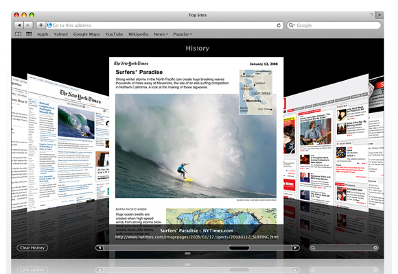

Ceci est le navigateur Web développé par Apple, dans une version adaptée à iOS, et son interface multi-touch. La partie supérieure de l'écran y est occupée par une barre d'adresse, dans laquelle il est possible d'entrer directement une adresse via le clavier virtuel, et d'une barre de recherche, permettant de rapidement soumettre des mots-clés à Google ou Yahoo, selon un choix antérieur de l'utilisateur. L'application Safari permet d'accéder à internet via un réseau EDGE, 3G ultra-rapide ou Wi-Fi encore plus rapide. En somme, iPhone vous connecte automatiquement au réseau disponible le plus rapide.
Ceci est le navigateur Web développé par Apple, dans une version adaptée à iOS, et son interface multi-touch. La partie supérieure de l'écran y est occupée par une barre d'adresse, dans laquelle il est possible d'entrer directement une adresse via le clavier virtuel, et d'une barre de recherche, permettant de rapidement soumettre des mots-clés à Google ou Yahoo, selon un choix antérieur de l'utilisateur. L'application Safari permet d'accéder à internet via un réseau EDGE, 3G ultra-rapide ou Wi-Fi encore plus rapide. En somme, iPhone vous connecte automatiquement au réseau disponible le plus rapide.
Safari pour iOS fut plusieurs fois acclamé pour sa simplicité d'utilisation, et pour son ergonomie. En effet, l'utilisateur y explore des pages web en glissant simplement son doigt sur l'écran, et peut zoomer ou dézoomer sur le contenu en écartant ou pinçant deux doigts. De plus, le mode paysage est également géré pour cette application, une fois de plus par une simple rotation de l'appareil. On notera également la présence d'un zoom intelligent ; un double tapotement sur du contenu adaptera automatiquement le zoom à la largeur du bloc de texte, de l'image, ou de n'importe quel contenu.

En outre, il dispose des fonctions basiques d'un navigateur : aller à la page précédente ou suivante, arrêter le chargement d'une page, rafraîchir celle-ci, un gestionnaire de marque-pages, et d'historique. Il est également possible d'ajouter ses pages internet favorites à l'écran d'accueil de l'appareil, sous forme d'une icône identique à celle des applications. Enfin, il est possible d'ouvrir plusieurs onglets à la fois, et de naviguer entre eux via l'icône située dans le coin inférieur droit de Safari. Il est également possible de synchroniser les signets enregistrés sur un ordinateur.